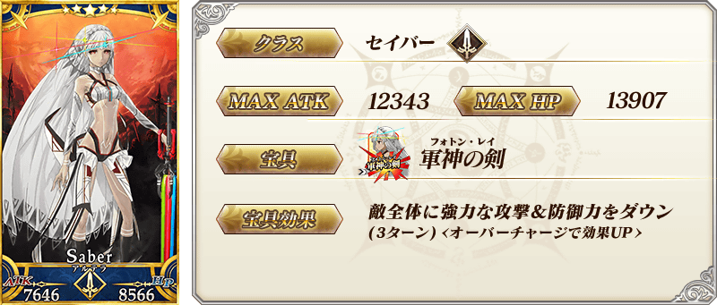
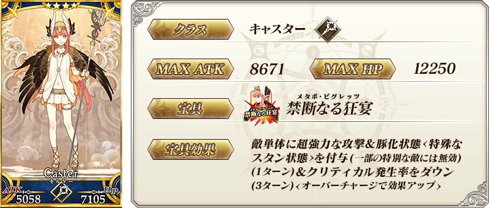
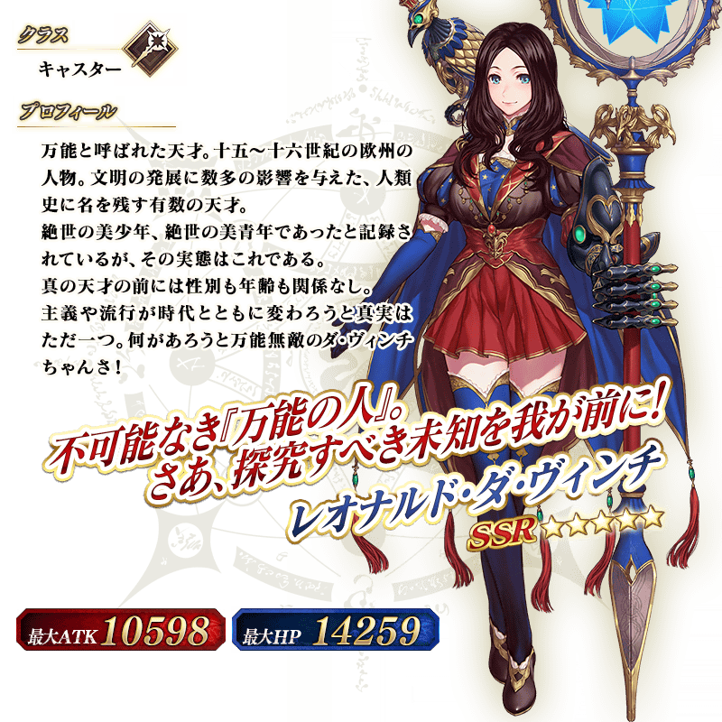

◆『「靠漫畫了解！Fate/Grand Order」第2本發售記念宣傳活動Pick Up召喚(每日交替)』期間◆
期間:2019年5月24日(五) 17:00～6月7日(五) 11:59
舉辦期間限定『「靠漫畫了解！Fate/Grand Order」第2本發售記念宣傳活動Pick Up召喚(每日交替)』！
從有關「靠漫畫了解！Fate/Grand Order」第2本的從者之中，「★5(SSR)李奧納多・達文西」以期間限定登場！
本次包含上述Pick Up5位的從者！
「★5(SSR)阿提拉(Saber)」「★5(SSR)李奧納多・達文西」以每日交替Pick Up！
「★4(SR)伊莉莎白・巴托里(Lancer)」「★4(SR)俄刻阿諾斯的Caster(喀耳刻)」「★3(R)清姬(Berserker)」常駐Pick Up。
詳情請在聖晶石召喚畫面左下的召喚詳細確認。
並且，期間限定概念禮裝「★3(R)ジャングルの掟」「★3(R)カッコーの巣の上で」「★3(R)幸せとは温い子犬」「★3(R)慎ましき豚」常駐Pick Up！
◆有關從者的注意◆
※「★5(SSR)李奧納多・達文西」在Pick Up期間結束後不會追加到故事召喚。
※請注意『「靠漫畫了解！Fate/Grand Order」第2本發售記念宣傳活動Pick Up召喚(每日交替)』做為每日交替，「★5(SSR)李奧納多・達文西」就算Pick Up期間中也會有不被抽出的日子。
※「★5(SSR)阿提拉(Saber)」「★4(SR)伊莉莎白・巴托里(Lancer)」「★4(SR)俄刻阿諾斯的Caster(喀耳刻)」「★3(R)清姬(Berserker)」在Pick Up期間結束後仍會在故事召喚被抽出。
※關於隱藏真名尚未判明的從者，透過主線關卡的進行會讓從者及一部份份寶具的名稱變化。
◆有關從者真名的注意◆
在2018年12月31日(二) 23:00以後新配信的主線故事及期間限定活動、一部份關卡、宣傳活動及召喚中，會顯示隱藏真名的對象從者真名。
※已經配信的主線故事、復刻活動、一部份關卡中不在此限。
◆有關概念禮裝的注意◆
※「★3(R)ジャングルの掟」「★3(R)カッコーの巣の上で」「★3(R)幸せとは温い子犬」「★3(R)慎ましき豚」在Pick Up期間中，也能靠友情點數召喚獲得。
※請注意自友情點數召喚抽出的「★3(R)ジャングル的掟」「★3(R)カッコー的巣的上で」「★3(R)幸せとは温い子犬」「★3(R)慎ましき豚」在自動變還設定登錄★3(R)概念禮裝的情況，會變成自動變還的對象。
Pick Up期間中，期間限定從者、Pick Up從者、期間限定概念禮裝的出現機率提升！
10次召喚中確定1張★4(SR)以上和確定1位★3(R)以上的從者！
※確定★4(SR)以上包含從者和概念禮裝。
※本頁面皆為開發中圖片。會有與實際圖片相異的情況。
◆『「靠漫畫了解！Fate/Grand Order」第2本發售記念宣傳活動Pick Up召喚(每日交替)』Pick Up內容◆
| Pick Up期間 | Pick Up內容 | |
|---|---|---|
| 全天Pick Up | 每日交替追加Pick Up | |
| 5/24(五) 17:00～ 5/26(日) 22:59 |
★4 伊莉莎白・巴托里(Lancer) ★4 俄刻阿諾斯的Caster(喀耳刻) ★3 清姬(Berserker) |
★5 阿提拉(Saber) ★5 李奧納多・達文西 |
| 5/26(日) 23:00～ 5/29(三) 22:59 |
★4 伊莉莎白・巴托里(Lancer) ★4 俄刻阿諾斯的Caster(喀耳刻) ★3 清姬(Berserker) |
★5 李奧納多・達文西 |
| 5/29(三) 23:00～ 6/1(六) 22:59 |
★4 伊莉莎白・巴托里(Lancer) ★4 俄刻阿諾斯的Caster(喀耳刻) ★3 清姬(Berserker) |
★5 阿提拉(Saber) |
| 6/1(六) 23:00～ 6/3(一) 22:59 |
★4 伊莉莎白・巴托里(Lancer) ★4 俄刻阿諾斯的Caster(喀耳刻) ★3 清姬(Berserker) |
★5 李奧納多・達文西 |
| 6/3(一) 23:00～ 6/5(三) 22:59 |
★4 伊莉莎白・巴托里(Lancer) ★4 俄刻阿諾斯的Caster(喀耳刻) ★3 清姬(Berserker) |
★5 阿提拉(Saber) |
| 6/5(三) 23:00～ 6/7(五) 11:59 |
★4 伊莉莎白・巴托里(Lancer) ★4 俄刻阿諾斯的Caster(喀耳刻) ★3 清姬(Berserker) |
★5 阿提拉(Saber) ★5 李奧納多・達文西 |
※請注意會以每日交替變更Pick Up的從者。

 ※上述「★5(SSR)李奧納多・達文西」的卡面為靈基再臨第2階段。
※上述「★5(SSR)李奧納多・達文西」的卡面為靈基再臨第2階段。
 ※上述「★5(SSR)阿提拉(Saber)」的卡面為靈基再臨第2階段。

 ※上述「★4(SR)俄刻阿諾斯的Caster(喀耳刻)」的卡面為靈基再臨第2階段。
 ※上述「★3(R)清姬(Berserker)」的卡面為靈基再臨第2階段。
※上述「★3(R)清姬(Berserker)」的卡面為靈基再臨第2階段。
|
★★★R |

|
★★★R |

|
★★★R |

|
★★★R |
 ※上述「★5(SSR)李奧納多・達文西」的立繪為靈基再臨第2階段。
 ※上述「★5(SSR)阿提拉(Saber)」的立繪為靈基再臨第2階段。
※上述「★5(SSR)阿提拉(Saber)」的立繪為靈基再臨第2階段。
介紹「★5(SSR)李奧納多・達文西」「★5(SSR)阿提拉(Saber)」「★4(SR)伊莉莎白・巴托里(Lancer)」「★4(SR)俄刻阿諾斯的Caster(喀耳刻)」的寶具演出！
在「Fate/Grand Order」官方網站內的公告中，以影片公開寶具演出，敬請確認。
其他還有，「靠漫畫了解！Fate/Grand Order」第2本發售記念宣傳活動同時舉辦！
關於詳情，請自下述橫幅確認。